IN THE MIND'S EYE, THE LICK OF FLAMES from a cleanly cleaved round of pine evokes more than mere temperature. With it come images of romance, economy, family, independence, a simpler life-or at least roasting marshmallows. In many ways, burning wood is the symbol for the many things that we value in a country lifestyle. But like all of the joys that we partake in by getting involved in our sustenance, wood heat carries its duties and responsibilities.
Woodstove installation is not a trivial task. Without a collection of self-sacrificing friends and/or a stove lift, hefting a 500-pluspound chunk of metal and masonry is likely to earn you a season ticket to the chiropractor. Without the necessary sheet metalworking tools, you're more likely to end up with bandaged fingers than a custom stovepipe. Without the proper precautions, you and your family's lives are at risk from fire.
You could expect to pay at least $50 plus materials to have a professional chimney sweep or woodstove shop do your woodstove installation for you, and, considering the expertise and labor involved, that might be a bargain. Of course, you may want to do the job yourself. Perhaps you enjoy the challenge and self-satisfaction that come from doing your own installation. Maybe your local woodstove dealer fell victim to these fleeting moments of petroleum glut. Or, possibly you're just moving a stove from one room to another.
Whether you plan to observe or participate, there's a lot to know. Because no two woodstove installations are likely to be the same, no one can provide a blueprint to guide you.
The rare installation can be as simple as setting the stove down and adding a section of prefabricated stovepipe. More often, though, there will have to be thermal barriers to protect walls and floor, custom lengths of stovepipe, a factory-built chimney or maybe even a hole punched in a masonry chimney for a stovepipe connection. Beyond those topics lie the complicated matters of zero-clearance fireplaces and building or rebuilding masonry chimneys. We'll take you to the boundary of that last netherworld but no farther. Even that's a fair journey for six pages, so let's be on our way.
Inquiring Paper Pushers Want to Know
When adding a woodstove to your home or office, there are three officials who may want to know about it and get involved. Your building official may require a permit for the installation of a stove, particularly if you'll be putting in a factory-built chimney that passes through a wall or floor. Different locales have different building codes, so you'll need to know what your official does and doesn't allow. Don't repeat the mistake of one Californian we know of who installed a chimney through the second story floor and the roof of his new home-only to have the inspector require that it pass through a wall and go up the outside of the house. As a general rule, any installation particulars supplied with the stove and approved by Underwriters Laboratory (UL) take precedence over building codes; in the absence of UL guidelines, follow National Fire Protection Association (NFPA) recommendations and the prevailing code.
In some areas, the fire marshall may have jurisdiction to inspect and approve all woodstove installations. A call to your local fire station should turn up any pertinent regulations. (In any event, firefighters are almost always willing to come out and check your woodstove and advise you of any hazardous conditions.)
Finally; contact the agent who handles your homeowner's insurance. Many policies now carry special provisions for woodburning appliances. The wording is sometimes very particular about the types of chimneys covered, and the presence of a UL plaque on the heater is often mentioned. Many insurance companies require fire marshall approval before covering a house equipped with a woodstove. Failure to notify the company and comply with the terms of policy could negate your coverage.
Moving Heavy Heaters
The smallest of steel and cast-iron woodstoves may weigh as little as 200 pounds-a burden two people can handle without risking hernias. But most of the more sizable wood burners available today weigh considerably more. The right tool for moving a heavy woodstove is a stove lift (Fig. 1). It's similar to a hand truck but is heavier-duty, has a deeper blade and has a hydraulic lift so you can lower a heater to ground level from a truck or raise it to the level of a hearth. You won't find a stove lift at your local tool-rental store, but you might be able to convince a woodstove dealer to rent you one.
Barring that, borrow or rent a heavy-duty hand truck-one rated for at least 500 pounds. Then remove everything that you can from the stove.
The stove lift or hand truck will only get the heater close to where you want it to be. The last few feet will have to be handled with brute force or finesse. If the latter sounds more appealing, prepare a half-dozen pieces of 3/4" to 1 1/2 water pipe to roll the stove on (Fig. 2). (PVC is stout enough and doesn't mar surfaces.) Use the pipes as the Egyptians used logs to move huge blocks of pyramid: Lift one edge of the stove and roll a pipe under. Teeter the stove on the one pipe so you can get another underneath. Then roll the unit, shifting the pipes from back to front as they're ejected.
A Sootable Chimney
A properly designed chimney in good repair is a prerequisite for any safe woodstove installation. The flue must be made of a suitably heat-resistant material, must be separated from combustibles by the appropriate mandated distance, must be leak-proof and must be the correct diameter and height. Based on an examination of these factors, you'll have to decide whether to use the existing chimney as is, repair it or give up and install a new one.
Is it the right size? Measure the size of your chimney at the top and calculate its cross-sectional area. Regulations prohibit attaching a woodstove to a chimney that has a cross-sectional area smaller than, or more than three times larger than, the stove's outlet. Be forewarned: A masonry chimney designed for a fireplace is likely to present problems for a woodstove. Cross-sectional area accrues rapidly with increases in size-an 8"-diameter flue has almost twice as much area as one with a diameter of 6"-and fireplaces usually have much larger chimneys. The accompanying chart summarizes maximum chimney sizes for common outlets.
Remember that these are maximums. Within the guidelines, larger is not better. Because excess chimney capacity slows smoke and cools it, too large a chimney reduces draft and increases creosote accumulation. Most experts recommend that the chimney have no more than twice the cross-sectional area of the outlet, and they consider equal or only slightly larger to be ideal.
The chimney must also be tall enough. A tall chimney draws better than a short one, and 12'-from the stovepipe connector to the top-is a practical minimum. Additionally, the top of the chimney must be at least 3' above the roof and at least 2' higher than any part of the building within 10' (Fig. 3).
Existing masonry chimneys. Any masonry chimney used to vent a woodstove must be lined-usually with clay flue tiles, which should be mortared at the joints with refractory cement and should be separated from the stone-, brick- or blockwork by a 1/2" air space (Fig. 3). If there is a lining, examine it to see if it's in good shape. The interior surface shouldn't show signs of chipping. Likewise, the exterior masonry and joints should be sound.
Some further regulations concerning masonry chimneys used for woodstoves: Structural chimney walls must be at least 4" thick if made from brick and at least 12" thick if made from stone. Solid 4" cement block is permitted, but hollow blocks aren't acceptable. Interior chimneys must be spaced at least 2" from any combustible material, and exterior chimneys must have a 1" space to the house. In both cases, the air space must have a fire stop of noncombustible material (such as metal of at least 26 gauge) no more than 1/2" thick (Fig. 3). Only one appliance may be connected to a flue, and all other openings must be sealed. Ideally, the only other penetration of the liner will be a low airtight cleanout door.
Okay, let's be honest. The likelihood of finding an existing chimney that meets all of these guidelines is not too great. There are around 20 million chimneys serving wood-burning appliances in the U.S., and experts estimate that at least half are unsafe. Why so poor a showing? Fireplace chimneys weren't designed for the stress of intense chimney fires caused by the heavy creosote deposited by controlled-combustion woodstoves. As a result, chimney construction guidelines have been changed as more has been learned about the problems posed by woodstoves. For example, the 1" airspace requirement for exterior chimneys is a new NFPA change.
Relining. What do you do if your chimney isn't safe for a woodstove? If the chimney is deficient because it's too large, lacks a liner or is in poor repair, relining may be an option. There are two basic approaches, with a number of variations on each. These are not do-it-yourself systems, so you'll be limited to those products being offered by pros in your area. The most common type is a stainless-steel pipe-usually a special spiral-wound, corrugated tube-surrounded by insulation (Fig. 4). Masonry liners, wherein thermal concrete is poured around a removable form or lowered in precast sections, are enjoying increasing popularity, because they add strength to deteriorated chimneys and resist thermal shock very well (Fig. 5). Both approaches have good durability records, though masonry liners are better established, having been in use in Europe for more than 30 years. So far, stainless-steel systems are usually a little less costly. In any case, expect to pay between $25 and $50 per foot, depending on the details of the job. For the price, you'll get a safe chimney that has great draft and that accumulates very little creosote.
Insulated metal chimneys. The other option if you're confronted with a deficient masonry chimney is to abandon it. For about the cost of relining, you can install a factory-built, insulated metal chimney. These are durable stainless-steel systems with prefabricated wall, floor and roof "pass-throughs." They typically can pass within 2" of combustibles, so, depending on the layout of your home, it may not be difficult to install one between wall studs or ceiling joists and rafters.
The likelihood of finding an existing chimney that meets the guidelines isn't great.
There are three basic types of factory-built chimney: triple-wall, air insulated; double-wall, solid-insulated; and double-wall, solid insulated, air-cooled (Fig. 6). Any of the three will work, but most installers now prefer the last two because they're more compact. Solid insulated, double-wall chimney has been around for over a decade and is widely available from a variety of manufacturers. Double-wall, solid-insulated, air-cooled chimney-a more recent development by Simpson Dura-Vent-attempts to answer concerns about warpage of double-wall chimneys under the intense heat of chimney fires. The design allows the inside liner to flex outward and up and down as it heats, and it incorporates holes for air to cool the outer metal wall and the outside of the ceramic insulation during a chimney fire. All factory-built chimneys for controlled-combustion wood-burning appliances (and even for fireplaces in New York City) must now use UL 103 HT (high temperature, 2,100°F) stainless pipe to solve the warpage problems encountered with lower temperature-rated systems.
Clearances
Radiant heat from a woodstove or stovepipe connector can cause problems with combustible materials at surprisingly low temperatures. Consistent exposure to temperatures as low as 150°F is sufficient to cause deterioration of wood. Any new woodstove will include a listing of minimum clearances to combustible materials; such information is a requirement for UL approval. If you're installing a used heater that lacks a UL plaque or other instructions, follow the minimum clearances recommended by the NFPA (Fig. 7).
Floor protection. There are two concerns for protecting combustible floors-radiant heat from the stove and embers spilling during refueling or cleanout-so there must always be some floor protection. The degree of the protection is based on the height of the stove body above the floor. For heaters with no legs, such as a fireplace insert, the floor must be totally noncombustible, i.e., a concrete slab. For woodstoves between 2" and 6" above the floor, there must be hollow concrete blocks at least 4" thick on top of 24gauge or thicker sheet metal. For woodstoves more than 6" above the floor, you can use bricks, rocks or blocks at least 2" thick atop 24gauge or thicker sheet metal. In all cases, the protector should extend at least 18" in all directions or to the wall.
Reduced clearances. Once you start to figure out where you can put a stove that keeps it at least 36" from anything combustible, you'll quickly become interested in ways to reduce the required clearance. An effective thermal barrier can reduce the clearance on an unlisted stove to 12", which offers a great deal more flexibility in the configuration of the installation.
All clearance-reduction methods are variants on one theme: providing a noncombustible barrier to radiant heat with a free flowing air space behind it. If air cannot move freely behind the barrier, the wall materials behind it will eventually heat up. The barrier itself can be sheet metal, brick, or fire-rated cement board (not paperfaced gypsum board) with various cosmetic coverings. Bear in mind, though, that the air space must be at least 1" deep, that there must be vents to allow circulation at the top and bottom of the barrier and that the barrier should extend out and up so that its edge is no less than 36" from the stove. These concerns can place limitations on both the location of the installation and the construction method. In practice, sheet metal is the easiest and least expensive material to use for barriers. You can buy suitable 24-gauge sheet at heating-supply stores.
Stovepipe connector clearance, which is normally 18", can also be reduced using radiant barriers-to 9".The wall barrier may be extended upward, or you might consider attaching the barrier to the stovepipe itself (Fig. 8). The latter technique isn't recognized by all building codes, so check before using it. Of course, you could also eliminate stovepipe entirely by using insulated chimney down to the stove, reducing the necessary clearance to 2" in most cases. (Check the chimney manufacturer's g'delines to see if they permit this use.) ui
Pass-throughs. If at all possible, avoid having stovepipe pass through a wall or ceiling. It's far better to install the woodstove near the chimney or, if necessary, relocate the chimney. Nonetheless, there may be situations where stovepipe will have to pass through a combustible wall to reach a chimney, and there are four approved ways to do it. (Neither NFPA regulations nor building codes allow stovepipe to pass through a floor or ceiling; to pass through a floor or ceiling you must use a factory-built or masonry chimney that continues unbroken to the top.)
The traditional wall pass-through is the ventilated thimble. This consists of site-fabricated metal assembly with ventilation holes and fiberglass insulation that separates the pipe from combustibles by a minimum of 6" (Fig. 9). Another frequently used technique was approved by NFPA in 1986: passing the stovepipe connector through a section of factory-built chimney with 2" clearance to combustibles (Fig. 10). Also acceptable is the use of a section of double-wall chimney with 9" clearance (Fig. 11) or a clay liner separated from combustibles by 12" of brick (Fig. 12).
Outside air won't make your wood burner more efficient.
Connections
As a rule of thumb, make stovepipe connectors as short as possible and use the minimum number of elbows. Though extended stovepipe sections do extract some additional heat from flue gases, the tradeoff is reduced draft and increased creosote accumulation. Today's low-emission woodstoves, which are mandated by the Environmental Protection Agency, are particularly sensitive to adequate draft for proper operation. In addition, because their high efciency lowers the temperature of flue gases, there's comparatively little to be gained by long connectors.
Stovepipes 6" in diameter or larger should be made of 24-gauge or thicker standard or stainless steel; the occasional 5" connector can get by with 26-gauge metal walls. Avoid galvanized connectors because of the zinc used to reduce their rate of corrosion. Stovepipe connectors are expected to deteriorate-average life expectancy is three to five years. They should be inspected regularly and replaced when necessary.
Position female stovepipe joints facing upward, so that liquid creosote won't drip down the outside of the pipe. Furnace cement may be helpful in sealing joints, but it won't prevent dripping if the couplings are reversed. (Don't bother with duct-sealing tape-even the metal variety-as heat quickly destroys the adhesive.) Secure each stovepipe joint with three sheet-metal screws spaced around the circumference. A magnetic, hex-head driver in an electric drill with the appropriate screws (Fig. 13) will save you the trouble of drilling lead holes.
There are two types of elbows that are commonly available: pieced, which are composed of bands of steel that can be rotated to adapt the elbow to different angles, and corrugated flexible. Pieced elbows may be slightly less expensive but are practically impossible to seal completely. Flexible elbows have no seams (other than those where they connect to stovepipe sections) but may be more difficult to clean because of the corrugations.
Every chimney should be equipped with a cleanout (code will likely require it), and it's often easiest to include this access in the stovepipe section using a cleanout T (Fig. 3). Don't forget to secure the cap with sheet-metal screws.
Other details of stovepipe connectors: Horizontal stovepipe runs should have a slope of 1/4 " per 1' toward the heater, to facilitate draft and to encourage creosote to drain back toward the firebox. If for some reason there has to be a long horizontal run-it should never be more than 3/4" the height of the chimney-the pipe should be supported every 6' . When a stovepipe enters a masonry chimney, it should connect through a tile or steel sleeve and should extend at least 3" into the thimble and close to but not past the inside wall of the chimney. In addition, if the stovepipe enters a chimney serving a fireplace below, the chimney must be sealed at the base of its flue tile, above the fireplace's smoke chamber-not at the fireplace opening or the damper.
It's not as difficult as you might suppose to break into a masonry chimney for a stove connector. A star drill actually a form of chisel-and a 3-pound hammer make pretty quick work of bricks (Fig. 14). Break away a large enough area to fit a 6" or 8" (whichever is appropriate) tile thimble, but don't attack the tile chimney liner with the star drill. Use a '/a" masonry bit and an electric drill to bore a series of holes that form a circle with a diameter equal to the outside of the thimble. Carefully tap the disk out with a hammer, clean up any jagged edges, and grout the thimble in place with refractory cement, being careful to thoroughly seal the joints. Don't worry too much about the rough look on the outside. The damage can be covered with an inexpensive trim ring designed to fit the diameter of stovepipe you use.
Direct connection. A fireplace seems the logical place to connect a woodstove, and, indeed, it was a very common practice in the past to seal the face of a fireplace with a sheet of steel and stick a stovepipe through it. But violent chimney fires from heavy creosote accumulations inside such fireplaces have turned out to be one of the leading causes of woodstove-related house fires, so this practice is now forbidden in revised NFPA standards. The new approach-direct connection-specifies that stoves and fireplace inserts must be positively connected to the flue tile itself (Fig. 15) and that the fireplace damper must be removed and sealed with a sheet of steel. A number of companies have introduced kits to accomplish this tricky business, and you'd be well advised to use one. As yet, full connection-essentially a relining running from a fireplace insert to the top of the chimney-has not been mandated, but many chimney experts consider it the ultimate way to go.
Outside air. Should you equip your woodstove with an outside combustion air supply? If you live in a mobile home, outside air is required, and you should look for a wood burner specifically designed for mobile homes. For owners of conventional homes, however, outside air is an option, and there are several issues to consider.
First, let's debunk a couple of myths. Outside air won't make your wood burner significantly more efficient. Using household air incurs no comparative performance penalty, because cold outside air would have to be heated in the firebox. Hence, the energy lost to increased air infiltration caused by drawing house air for combustion is balanced by improved stove efficiency. Nor is a woodstove likely to use enough air (they commonly use less than 50 cubic feet per minute) to deplete your home of oxygen. Few houses are tight enough to entirely prevent the air from being replaced through leaks in walls, ceilings, windows and doors.
There are, however, potentially serious problems an internally supplied woodburner can contribute to. Because a woodstove exhausts household air, it can contribute to an air-pressure differential between indoors and out. When the house has lower air pressure than the outdoors, natural draft combustion appliances (including the woodstove, the water heater and the furnace) may operate in reverse. Combustion air can be drawn down the chimneys and exhaust spewed out the indoor air intakes.
If this happens with a woodstove-a phenomenon known as backpuffing--it's obvious. You can see and smell the smoke. Backdrafting gas furnaces and water heaters, however, do not offer such clear symptoms. If the woodstove happens to draft properly-perhaps because you've installed such a great chimney-but the other combustion appliances reverse, you and your family may die in your sleep of carbon monoxide poisoning without the slightest warning. (Carbon monoxide is colorless and odorless.) Likewise, lower pressure inside the house than out contributes to another health concern: the presence of radon and its decay products. Pressure differential is the main motive force for this radioactive, cancer-causing gas to pass from the soil into a building.
Thus a woodstove that gets its combustion air from the house is a small but potentially significant contributor to life-threatening health problems. Though outside air is not yet generally mandated, we predict that regulations will eventually require all combustion appliances to get combustion air from outdoors. This is your chance to join the vanguard. To do so, acquire a "mobile home" stove and follow its installation instructions.
Accessories
Part and parcel to safe woodstove installation is the acquisition of appropriate safety equipment. Of course, you already have smoke detectors positioned at the recommended locations. Some people also put one near their stove, though it may issue irritating false alarms if the wood burner is prone to backpuff. You should have an ABC-rated fire extinguisher of at least 5 pounds capacity located prominently, and everyone of age in the household should know where it is and what to do with it. You'll also want to acquire a chimney fire extinguisher either a dry-chemical pressurized canister or the type resembling highway flares.
You might also want to consider getting a stovepipe thermometer, or even an alarm, to help you operate the stove optimally and to warn of chimney fire. These devices range from simple, inexpensive bimetallic coils (ask your dealer for a Condar Stovetop Thermometer or equivalent) to more sophisticated electronic thermometers (available from Condar and others) to alarms that trigger at a set temperature (FASCA, Inc., Box 157, Spencer, WI 54479).
Working With Sheet Metal
Now that you understand the requirements for a safe, efficient woodstove installation, let's finish up with a few details on tools and techniques. Working with sheet metal, whether it be stovepipe or a thermal barrier, is easy and rewarding once you've got the right tools and know how to use them.
Metal-cutting tools. The most common metal-cutting shears, tin snips, look much like overgrown scissors. These are dandy for doing delicate work in thinner gauges of soft metals, but they're not what you need for stovepipe and duct-gauge steel. You need compound, offset, leverage snips, often called aviation snips. These increase the force of your grasp by more than 10 to 1. Aviation snips commonly come in right- and left-hand versions, which refer not to the hand used to operate them but to the side of the metal that will become waste and the direction in which they can be turned for curves (Fig. 16). Right-hand snips are green and left-hand are red, for easy identification. Since you won't be cutting many curves and can probably flip the material you're working on anyway, you can get by with one pair. Most right-handed people start with green.
For the discerning tool collector, though, there are several other metal-working tools available from the local heating-supply store that make sheet-metal work much easier. For example, though "handed" snips will cut straight, straight-cut (yellow) or, better yet, center cut snips do a nicer job, since they remove a small section from the center of the sheet, leaving both sides untwisted. To get through seams, a pair of extra-heavy-duty snips are also handy. One practically indispensable tool for forming custom-length stovepipe sections is a crimper. This tool creases a shortened pipe to form the male end that slips inside another section of pipe, an elbow, an outlet or a thimble. And for folding over the periphery of sheet-metal thermal barriers to remove dangerous ragged edges, a hand brake, called "tongs," is very useful. Full-size brakes are wonderful but expensive. To make major bends in a few pieces of sheet metal, clamp the steel between two boards and hammer it over with another. Finally, don't even try to deal with sheet metal without wearing a pair of heavy leather gloves to protect your hands. Blood is the wrong medium in which to sign your handiwork.
THOUGH IT'S BEEN SAID OVER AND OVER, IT cannot be repeated too often: No woodstove installation is safe without proper maintenance. After your stove is in and operating, check the chimney weekly for creosote until you learn how quickly the system is prone to gum up. Bear in mind, too, that creosote will accumulate at different rates, depending on how you operate the heater. Many new woodstove owners are surprised to find out how quickly a chimney can plug up in the spring and fall, when little wood is used but fires are damped down drastically to keep the house from overheating. Whenever creosote reaches a thickness of 1/4" clean it out or have a sweep do it for you. Above all, never let the gentle, soothing heat lull you into forgetting what resides inside the woodstove: a tenuously domesticated monster called fire.
|
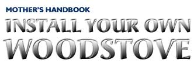 Illustrations By Kay Holmes Stafford Fig. 1 Stove lift |
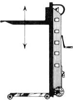 Fig. 2 Rolling a stove on PVC pipe |
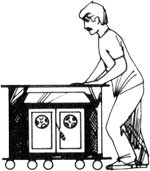 Fig. 3 A safe masonry chimney |
|
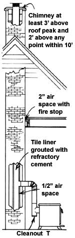 Fig. 4 Stainless stell reliner |
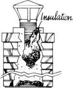 Fig. 5 Masonry reliner |
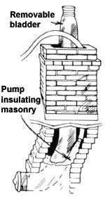 Fig. 15 Direct connection |
|
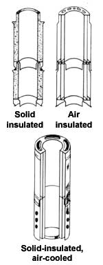 Fig. 7 Clearances to combustibles |
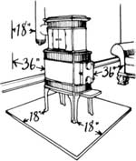 Fig. 8 Stovepipe heat shield |
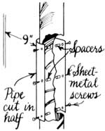 Fig. Fiberglass insulation pass-through |
|
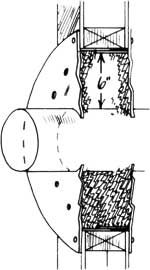 Fig. 10 Factory built pass-through |
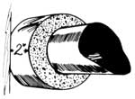 Fig. 11 Double-wall chimney pass-through |
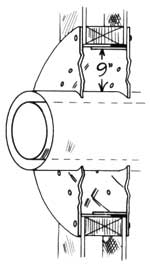 Fig. 12 Clay liner pass-through |
|
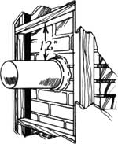 Fig. 13 magnetic hex-head driver and self-tapping screw |
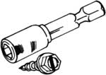 Fig. 14 Star drill and hammer |
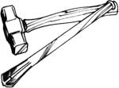 |
|
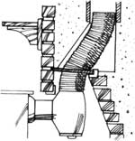 Fig. 16 Aviation snips |
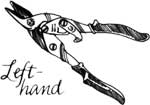 |
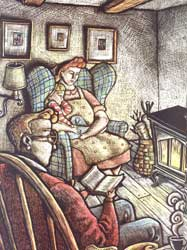 |